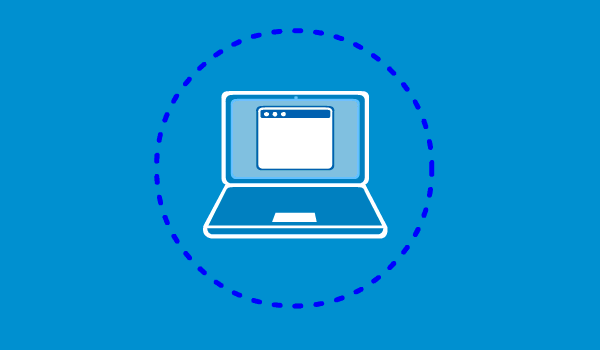

5 Medidas de Seguridad Informática
Te mostraremos algunos tips de seguridad que te servirán para evitar las distintas amenazas que hay en la red.

1-Proteger el correo electrónico
El correo electrónico se ha convertido en una fuente de información sensible que debe ser protegida, tras las diversas trampas como elcon la que pueden extraer hasta datos sobre nuestras tarjetas de crédito. Una de las medidas de seguridad que se recomienda es la de usar

2-Contratar servicios de seguridad y actualizaciones al día
Es fundamental tener instalados en nuestros dispositivos, software integrales de seguridad como el antivirus, el anti espías o un firewall. Aunque también, es importante que todos los programas y sistemas operativos instalados en el pc estén actualizados.

3-Vigilar las conexiones a internet Wi-fi y Navegaciones
Los expertos aconsejan activar los
modos privados en los navegadores y controlar y borrar laspara no dejar rastro de
nuestra actividad en los sitios web visitados.
Otra de las acciones que se tienen que hacer para preservar esa seguridad en el
acceso a internet es la de no conectarse a redes Wi-fi públicas.

4-Realizar copias de seguridad al día
Realizar periódicamente backups o copias de seguridad es otra de las acciones que hay que hacer si queremos proteger nuestra base de datos. Para no perder datos como fotografías o contenido personal es fundamental realizar copias de seguridad cada cierto tiempo.
5-Proteger el Teléfono Móvil
Igual que sucede con el PC debemos proteger todos los accesos posibles del móvil mediante patrones o contraseñas. Además de datos bancarios, también se encuentra el correo electrónico, imágenes, vídeos personales, conversaciones privadas en aplicaciones de mensajería instantánea,etc…Lo que hace que sea muy importante protegerlo.
CONTRASEÑAS MÁS USADAS
La mayoria cuando crea una contraseña lo primero que piensa es en datos
personales (nombre de mascotas,cumpleaños,su nombre,etc)
Pero esas son las mas faciles de descubrir, ya que pueden haberte investigado
para tener esta informacion
(aunque las más usadas son los números)
Tardan menos de un segundo lograr decifrarlas

TOP 6 DE CONTRASEÑAS MAS USADAS
- 123456 (103.170.552 veces usada)
- 123456789 (46.027.530 veces usada)
- 12345 (32.955.431 veces usada)
- qwerty (22.317.280 veces usada)
- password (20.958.297 veces usada)
- 12345678 (14.745.771 veces usada)